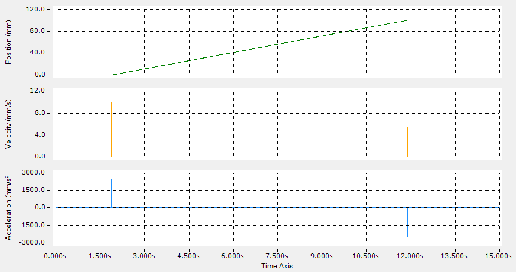
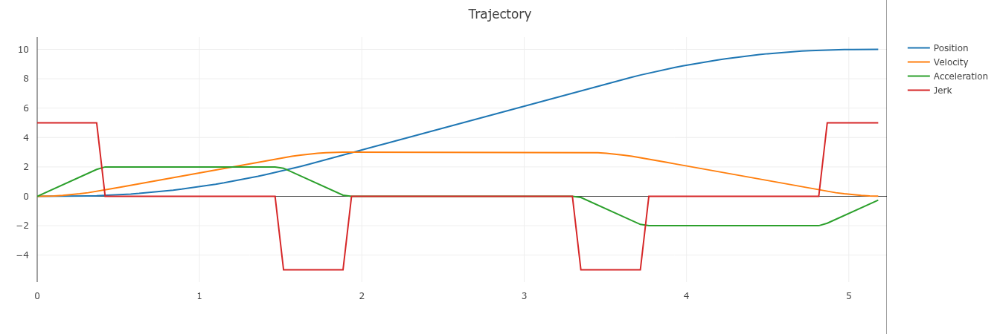
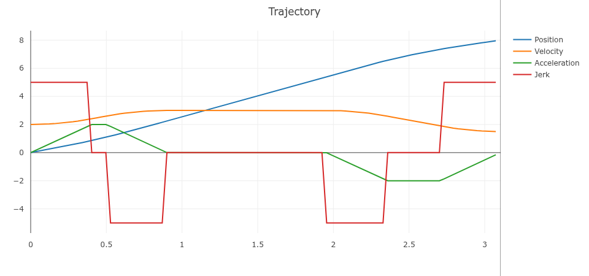
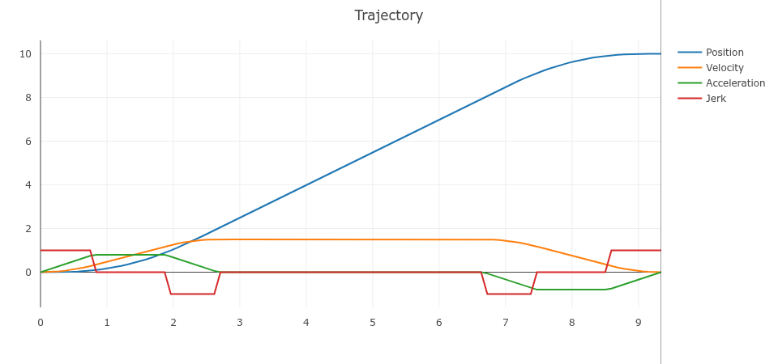

Single axis trajectory
This example configures a time-constrained move for one axis.
Example
PROGRAM ExampleSingleAxis
VAR
otg : Struckig.Otg(cycletime := 0.001, dofs := 1) := (
EnableAutoPropagate := TRUE,
Synchronization := Struckig.SynchronizationType.TimeSync,
MinDuration := 10.0, // considered when synchronization is TimeSync
MaxVelocity := [2000.0],
MaxAcceleration := [20000.0],
MaxJerk := [800000.0],
CurrentPosition := [0.0],
CurrentVelocity := [0.0],
CurrentAcceleration := [0.0],
TargetPosition := [100.0],
TargetVelocity := [0.0],
TargetAcceleration := [0.0]
);
END_VAR
otg();
Notes
MinDurationstretches the motion only when the unconstrained solution would be faster.- Use consistent units per axis, for example
mm,mm/s,mm/s^2,mm/s^3. - To run acceleration-only profiles, omit jerk constraints by leaving
MaxJerkat infinity defaults.
Visualization presets and matching ST code
These presets match the single-axis trajectories visualized in Ruckig Web Visualization.
| Preset | current_position | current_velocity | target_position | target_velocity | max_velocity | max_acceleration | max_jerk |
|---|---|---|---|---|---|---|---|
| Position | 0 | 0 | 10 | 0 | 3 | 2 | 5 |
| Velocity | 0 | 2 | 8 | 1.5 | 3 | 2 | 5 |
| Constraints | 0 | 0 | 10 | 0 | 1.5 | 0.8 | 1 |
Position preset
PROGRAM ExampleSingleAxisPositionPreset
VAR
otg : Struckig.Otg(cycletime := 0.001, dofs := 1) := (
EnableAutoPropagate := TRUE,
CurrentPosition := [0.0],
CurrentVelocity := [0.0],
CurrentAcceleration := [0.0],
TargetPosition := [10.0],
TargetVelocity := [0.0],
TargetAcceleration := [0.0],
MaxVelocity := [3.0],
MaxAcceleration := [2.0],
MaxJerk := [5.0]
);
END_VAR
otg();
Velocity preset
PROGRAM ExampleSingleAxisVelocityPreset
VAR
otg : Struckig.Otg(cycletime := 0.001, dofs := 1) := (
EnableAutoPropagate := TRUE,
CurrentPosition := [0.0],
CurrentVelocity := [2.0],
CurrentAcceleration := [0.0],
TargetPosition := [8.0],
TargetVelocity := [1.5],
TargetAcceleration := [0.0],
MaxVelocity := [3.0],
MaxAcceleration := [2.0],
MaxJerk := [5.0]
);
END_VAR
otg();
Constraint-limited preset
PROGRAM ExampleSingleAxisConstraintPreset
VAR
otg : Struckig.Otg(cycletime := 0.001, dofs := 1) := (
EnableAutoPropagate := TRUE,
CurrentPosition := [0.0],
CurrentVelocity := [0.0],
CurrentAcceleration := [0.0],
TargetPosition := [10.0],
TargetVelocity := [0.0],
TargetAcceleration := [0.0],
MaxVelocity := [1.5],
MaxAcceleration := [0.8],
MaxJerk := [1.0]
);
END_VAR
otg();



